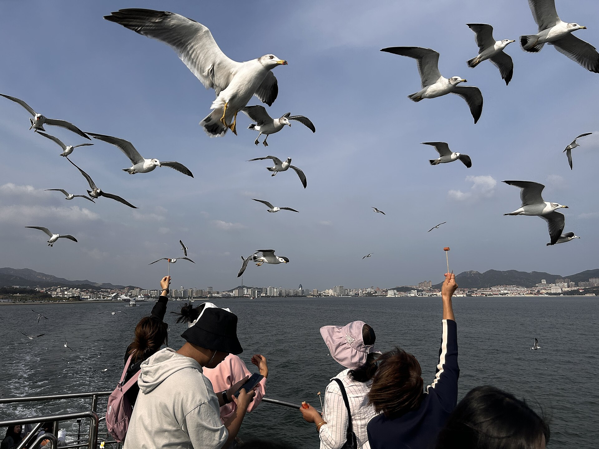

D1
软卧抵威海 + 城市海岸
广州出发站 → 威海北优先 → 幸福门/大相框/悦海灯塔
方案A：7月20—25日｜方案B：7月20—27日｜广州/佛山出发
六天版以八天版为母版，只删除青岛两天；去程改坐软卧到威海，威海3晚、开封2晚和全部核心体验原样保留。
八天版保留青岛2晚、威海3晚、开封2晚，是内容最完整的三城版本；全程不爬山。
少而精，不赶路，把最喜欢的地方玩透。
点击后，总控、住宿、详细日程、交通和费用会同步切换。
当前显示：方案B｜8天舒适深度版
疲劳指数：轻松 ⭐｜正常 ⭐⭐｜较累 ⭐⭐⭐。
广州出发站 → 威海北优先 → 幸福门/大相框/悦海灯塔
旅游码头 → 刘公岛 → 返航休息
半月湾 → 猫头山 → 午休 → 火炬八街 → 国际海水浴场
威海北 → 郑州东 → 开封 → 万岁山
白天核心节目 → 午间休息 → 夜场
万岁山 → 郑州新郑机场
广州白云 → 青岛胶东
八大关 → 二浴 → 小麦岛
青岛北 → 威海 → 城市海岸地标
旅游码头 → 刘公岛 → 返航休息
半月湾 → 猫头山观光车 → 午休 → 火炬八街 → 国际海水浴场
威海北 → 郑州东 → 开封 → 万岁山
白天核心节目 → 午间休息 → 夜场
万岁山 → 郑州新郑机场
路上先看这一组，想看细节再展开当天。
软卧到站后先入住；同等车次优先威海北站。
查看 D1 详细版乘船、观光车和一处老建筑，不走长坡。
查看 D2 详细版上午半月湾和猫头山，午休后看火炬八街与海水浴场。
查看 D3 详细版08:00起床，去威海北坐上午车；准点才看万岁山夜场。
查看 D4 详细版完整一天只围绕万岁山节目单执行。
查看 D5 详细版上午补节目，中午收手，下午送机。
查看 D6 详细版确认青岛酒店和机场接驳，晚到就直接休息。
查看 D1 详细版八大关、二浴安全机位、小麦岛，正午回酒店。
查看 D2 详细版08:00起床，选10:20后车次；抵威海先入住休息。
查看 D3 详细版刘公岛慢看，返航后休息，晚上只留1小时自由安排。
查看 D4 详细版上午半月湾和猫头山，午休后看火炬八街与海水浴场。
查看 D5 详细版08:00起床，去威海北坐上午车，傍晚进万岁山夜场。
查看 D6 详细版完整一天只围绕万岁山节目单执行。
查看 D7 详细版上午补节目，中午收手，下午送机。
查看 D8 详细版先锁跨城交通和万岁山，其他景点按当天状态取舍。
| 项目 | 何时确认 | 在哪里查 | 关键动作 | 没票/晚点怎么处理 |
|---|---|---|---|---|
| 广州出发站 → 威海 | 现在出票 | 12306 | 软卧830元/人，两人1660元；确认真实上车站、到达日期和终点站。相同到达时段优先威海北站。 | 若票面只到威海站就直接下车；到站晚只入住，不补城市地标。 |
| D2 刘公岛 | D1晚上 | 官方公众号 | 确认船班、返航、观光车、天气与身份证入园。 | 停航就改幸福门、大相框、悦海灯塔。 |
| D3 海岸分段打车 | D2晚上 | 高德/滴滴 + 官方观光车 | 确认半月湾下客点、猫头山观光车和返程叫车。 | 天气差先删猫头山。 |
| D4 威海北 → 郑州东 | 现在查票 | 12306 | 优先查10:00左右出发、16:00前抵达的车次；公开参考可查G3170。 | 到开封晚于17:30就删万岁山夜场。 |
| D4 郑州东 → 开封酒店 | 车票确认后 | 正规接送平台 | 预订接站车直达万岁山/龙亭圈。 | 晚点同步司机与酒店，D5完整日不动。 |
| 万岁山门票/节目 | D4上车后 | 官方公众号 | 核对票种、入园规则和当日节目单；D4夜场只在准点时执行。 | D5完整日 + D6上午补漏。 |
| D6 开封 → 新郑机场 | D4晚上 | 正规送机平台 | 13:30左右出发，匹配18:30后航班。 | 航班明显晚点才启用兜底酒店。 |
| 两城酒店 | 现在锁可取消 | 酒店平台 | 威海3晚、开封2晚；不拆连住订单。 | 确认寄存行李、24小时前台和门口叫车。 |
| 项目 | 何时确认 | 在哪里查 | 关键动作 | 没票/晚点怎么处理 |
|---|---|---|---|---|
| 广州白云 → 青岛胶东 | 现在出票 | 航司 App / OTA | 确认落地时间、行李额、青岛酒店接驳。 | 晚到即入住。 |
| D3 青岛北 → 威海 | D1晚前 | 12306 | 优先查10:20—11:50出发车次。 | 到威海晚就删灯塔。 |
| D4 刘公岛 | D3晚上 | 官方公众号 | 确认船舶、返航、观光车和天气。 | 停航就改城市海岸轻游。 |
| D5 海岸分段打车 | D4晚上 | 高德/滴滴 + 官方观光车 | 确认半月湾上下车点、猫头山观光车和返程打车。 | 天气差就取消猫头山。 |
| D6 威海北 → 郑州东 | 现在查票 | 12306 | 优先查10:00左右从威海北出发、16:00前到郑州东的车次；近期公开时刻可见G3170。 | 到郑州东晚于17:30就取消当晚万岁山。 |
| D6 郑州东 → 开封酒店 | 车票确认后 | 正规接送平台 | 预订接站车，争取17:30前入住。 | 晚点时夜场可删，D7完整日不动。 |
| 万岁山门票/节目 | D6上车后 | 官方公众号 | 确认三日不限次入园政策仍有效，再排D6夜场、D7全天、D8上午。 | 政策有变就以D7完整日为核心。 |
| D8 开封 → 新郑机场 | D6晚上 | 正规送机平台 | 13:30左右出发，匹配18:30后航班。 | 航班晚点才考虑兜底住宿。 |
| 三城酒店 | 现在锁可取消 | 酒店平台 | 青岛2晚、威海3晚、开封2晚。 | 优先连住，不拆订单。 |
按两名普通成年游客计算；免费街区也明确写出，避免临场找不存在的门票。
| 景点 | 两名成人票 | 在哪里预约/购买 | 建议提前 | 一票包含什么 | 另付项目与执行建议 |
|---|---|---|---|---|---|
| 八大关街区 居庸关路、公主楼/花石楼外观 | 0元 | 公共街区，无需预约；直接导航“八大关 居庸关路”。 | 0天 | 林荫街区及建筑外观。 | 花石楼内部公开参考8.5元/人，两人17元，通常现场购票；本路线只看外观，不列入核心票。其他建筑联票不为本路线必买，先看现场开放与价格。 |
| 第二海水浴场 | 岸边游览0元 | 无需预约；直接到开放公共岸线。 | 0天 | 沙滩、礁石与岸边观景。 | 游泳季管理费、冲淋、更衣、寄存和停车按现场公示另付；本路线不下水。洞口、礁石、堤坝从不视作收费保证项目，只按潮汐和围挡决定能否靠近。 |
| 小麦岛公园 | 0元 | 免费免预约；导航“小麦岛公园 西门”。 | 0天 | 草坪、花地、海岸步道。 | 商业摄影、餐饮及周边停车另付；本路线只走40—60分钟平缓短线。 |
| 五四广场/奥帆中心公共区 | 0元 | 公共区域无需预约。 | 0天 | 广场、海岸和夜景公共空间。 | 游船、帆船等体验均另收费且非本路线必做，累了直接删除。 |
| 幸福门外广场、威海公园、悦海公园 | 0元 | 公共空间无需预约。 | 0天 | 门形地标、大相框、灯塔和海草房外观。 | 幸福门登高、停车及商业项目若开放则另付；本路线只在地面拍照，不购买登高票。 |
| 刘公岛 | 244元 122元/人 | 微信搜索官方公众号“刘公岛景区” → “智慧旅游” → 在线预定；也可在“自在威海智慧旅游”或美团、抖音、携程、高德购买。购票成功即预约成功，刷身份证入园。 | 暑期建议3—5天；周末建议5—7天 | 景点门票91元/人 + 往返船票31元/人。 | 不含环岛交通。按不爬山路线选1号游览车60元/人，两人120元；2号线80元/人。环岛游船60元/人、潜艇30元/人、讲解另付，不重复购买。 |
| 半月湾 | 0元 | 公共沙滩无需预约。 | 0天 | 弧形海湾和公共岸线。 | 停车、餐饮另付；本路线采用分段打车，不产生停车费。 |
| 猫头山观景线 | 景观0元 观光车两人40元 | 到半月湾北岸停车场/景区站点扫描现场官方二维码购票；班次和线路看“半月湾景区”及威海公交当天公告。 | 前1天查运营；车票当天买 | 当前公开参考20元/人，可按线路站点上下车；最终以现场二维码为准。 | 2026年4月25日至10月7日部分辅线限制社会车辆进入，打车只到外围换乘点；全景观光巴士等其他线路可能价格不同。 |
| 火炬八街、国际海水浴场 | 0元 | 公共街区/海滩无需预约。 | 0天 | 坡路入海机位、公共沙滩与浪线。 | 停车、寄存、冲淋、餐饮和水上项目另付；本路线步行连接两点，不下水、不买项目。 |
| 万岁山武侠城 | 200元 100元/人 | 优先微信搜索官方公众号“开封万岁山武侠城”进入购票；也可用景区官方合作OTA。入园后立即查看当天电子/纸质节目单，并按官方入口预约《三打祝家庄》《沙场打铁花》等需预约场次。 | 门票建议3—5天；热门演出入园后立即约 | 当前常规票为三日内万岁山、中国翰园碑林、开封城墙三景区不限次入园；常规演出随门票观看。法定节假日和特殊活动可能调整。 | 汉服妆造、摄影、餐饮、游戏、纪念品和官方标注的独立收费体验另付。本路线不买套票、不加游乐项目，优先保核心演出。 |
版本切换后，只显示对应的5晚或7晚安排。
| 日期 | 今晚住哪里 | 连住 | 为什么住这里 | 明天第一件事 |
|---|---|---|---|---|
| D1 | 威海威高广场/幸福门 | 第1晚 / 共3晚 | 去城市地标、刘公岛码头和吃饭都方便。 | 08:00起床查刘公岛船班。 |
| D2 | 威海威高广场/幸福门 | 第2晚 / 共3晚 | 返航后继续住，不换酒店。 | 08:00起床，分段打车看半月湾与猫头山。 |
| D3 | 威海威高广场/幸福门 | 第3晚 / 共3晚 | 沿海慢游后回原酒店休息。 | 08:00起床，去威海北站。 |
| D4 | 开封万岁山/龙亭圈 | 第1晚 / 共2晚 | 傍晚入住后按准点情况决定夜场。 | D5完整玩万岁山。 |
| D5 | 开封万岁山/龙亭圈 | 第2晚 / 共2晚 | 完整日结束不换酒店。 | D6上午补漏后送机。 |
| D6 | 正常不住 | 返程日 | 只保航班。 | 按航班动态处理。 |
| 日期 | 今晚住哪里 | 连住 | 为什么住这里 | 明天第一件事 |
|---|---|---|---|---|
| D1 | 青岛五四广场/浮山所 | 第1晚 / 共2晚 | 落地接驳和D2出行都顺。 | 08:00起床去八大关。 |
| D2 | 青岛五四广场/浮山所 | 第2晚 / 共2晚 | 午休避晒，不换酒店。 | 按车次倒推去青岛北。 |
| D3 | 威海威高广场/幸福门 | 第1晚 / 共3晚 | 城市海岸与刘公岛码头都近。 | 08:00起床查船班。 |
| D4 | 威海威高广场/幸福门 | 第2晚 / 共3晚 | 返航后继续住，不换酒店。 | 08:00起床，分段打车看半月湾与猫头山。 |
| D5 | 威海威高广场/幸福门 | 第3晚 / 共3晚 | 沿海慢游后原酒店休息。 | 08:00起床，去威海北。 |
| D6 | 开封万岁山/龙亭圈 | 第1晚 / 共2晚 | 傍晚入住后可进夜场。 | D7完整玩万岁山。 |
| D7 | 开封万岁山/龙亭圈 | 第2晚 / 共2晚 | 完整日结束不用换酒店。 | D8上午补漏后送机。 |
| D8 | 正常不住 | 返程日 | 只保航班。 | 按航班动态处理。 |
参考九寨沟页的现场执行结构：卡片默认折叠，不让手机一打开就是长文。

同等车次优先威海北站；到站时间合适才去城市海岸地标。
软卧按830元/人、两人1660元执行。购票时确认真正的上车站、开车日期、到达日期、换乘方式和票面终点，不凭城市名猜车站。
12306：广州 → 威海 软卧
相同到达时段优先威海北站：到酒店圈通常约16—19分钟；若830元软卧订单只到威海站，就直接在威海站下车，约20—23分钟到酒店，不额外绕去北站。
导航：威海北站 → 威高广场 幸福门 酒店
15:00前住进酒店才执行完整三点；看门形地标、巨型画框和白色灯塔/海草房，三点之间打车，不沿海暴走。到站较晚只保幸福门，晚于17:30就全部删掉。
确认D2船班、观光车、天气和身份证入园；手机与充电宝充满。

坐船看威海湾、海岛与北洋海军老建筑，观光车代替爬坡。
08:30左右从酒店打车，预留安检、检票与候船；船班、停航和最晚返航只认景区当天公告。
导航：威海 刘公岛客运中心
船上回望城市天际线；上岛先看码头和海湾，再选北洋海军公所或丁汝昌寓所一处，最后坐1号游览车看黑松林、岛礁和老建筑外观。12:00前后在游客服务区休息补水。
最晚返航前留足候船时间；大风停航直接改城市海岸，不在码头久等。
确认D3猫头山观光车、天气与叫车；不把自由安排写成额外固定行程。

上午半月湾与猫头山，午休后再看火炬八街和国际海水浴场。
不退房、不带大件行李；半月湾看弧形海湾后，按官方管制换乘猫头山观光车。
看3号观景台层叠海岬与环海公路，不走徒步线；线路、班次和停靠点以现场二维码为准。
避开最热时段，手机和充电宝补满电。
火炬八街看彩色坡路直落大海，海水浴场看开阔沙滩和浪线；不站车道、不下水、不追日落到太晚。

跨省交通单独放一天，准点才进夜场，晚点就直接休息。
建议车次前60—90分钟离开酒店去威海北站，不安排早于08:00起床。
优先查上午出发、16:00前到郑州东的车次；公开参考可查G3170，最终只认12306订单。
12306：威海北 → 郑州东
提前约接站车直达万岁山/龙亭圈；晚于17:30入住就取消夜场。
准点时只按当天节目单看1—2场；不为夜场压缩晚饭和睡眠。

完整保留白天节目、午间休息和夜场。
先锁定需预约的核心演出，再倒推入园和移动。
不在入口商业街消耗体力，按开演时间走。
高温时坐下补水，不横穿园区。
节目名、预约方式和场次只认当天官方公告；排队过长就换下一场。
中午准时收手，下午只保送机和航班。
只补昨天冲突的2—3项；天气热或累了就不进园。
核对身份证、航班和送机订单。
优先匹配18:30后起飞航班，返程日不补其他景点。
导航：郑州新郑国际机场 T2

平安落地、住进交通方便的酒店，不硬加夜景。
国内航班按起飞前至少2小时到机场倒推。带大行李或首飞不熟时，宁可早到。
导航：广州白云国际机场 出发层
主选：打车/网约车直达五四广场或浮山所酒店。省钱备选：按高德实时地铁/机场线换乘，不拿晚到后的时间赌换乘。
导航：青岛 五四广场 浮山所 地铁站 酒店
第一晚只吃海鲜水饺、家常海鲜或面食；不冲远处网红海鲜店。

八大关看花石楼与林荫街，二浴找海中堤坝和洞口，下午看小麦岛草坪海岸。
不用清晨赶路。带水、防晒、舒服鞋和充电宝，打车到八大关靠居庸关路一侧。
看点：居庸关路的林荫轴线、公主楼彩色外墙、花石楼石墙与临海位置。建筑内部不是必做，不为排队买套票；这段的特色是“红瓦绿树 + 老别墅街区”，不是单纯散步。
导航：青岛 八大关 居庸关路
看点：退潮后礁石附近的洞口构图、伸入海中的防波堤和从沙滩回望花石楼。先在安全岸边外拍；只有潮位低、现场明确开放且无“禁止登坝”警示时才靠近，浪大或封闭绝不上堤、不钻洞。
导航：青岛 第二海水浴场 花石楼
回五四广场/万象城一带吃饭，避开最热时段。
看点：草坪和海面同框、隔海看城市天际线、贴近海岸的礁石层次。只走平缓短线，不绕全岛；日落人多时不排“孤独的树”机位。
导航：青岛 小麦岛公园 西门
若体力好，在酒店圈附近看帆船桅杆、情人坝方向和“五月的风”夜景；累了直接删，不影响主线。
08:00起床，坐上午较晚车次；傍晚串联三处城市海岸地标。
最早08:00起床，行李收好后再去青岛北站，不赶早班。
购票窗口：优先查10:20—11:50从青岛北出发、约中午抵达威海的车次；近期公开时刻可见10:23和11:44左右班次，但最终只认12306付款订单。
导航：青岛北站
先放行李和吃饭，不把中午塞成景点。
导航：威海 幸福门 威高广场 酒店
幸福门：看威海城市门形地标与海湾；大相框：用巨型画框把海面和人框进照片；悦海灯塔：看白色灯塔、海草房和傍晚海岸。三点之间用打车连接，不沿海全程暴走。
导航：威海公园 大相框
坐船看威海湾、海岛与北洋海军老建筑；这是威海知名度最高、与D5最不重复的一天。
08:30左右从酒店打车，预留安检、检票与候船时间；船班、停航和最晚返航只认景区当天公告。
导航：威海 刘公岛客运中心
看什么：离岸后回望幸福门方向的城市天际线、威海湾和追船海鸟；靠近岛时看海岛轮廓与岸边老建筑逐渐展开。
拍哪里：在开放甲板或船窗安全区域拍“城市退远、海岛靠近”，不探身、不喂鸟、不为照片抢船边。
先看：码头附近的舰船、铁码头与海湾；再看：北洋海军公所、丁汝昌寓所等一处核心建筑；最后：坐观光车看黑松林、岛礁、村落和英租时期建筑外观。官方介绍的观光车可连接主要站点，适合用来替代爬坡和重复步行。
休息补给：12:00前后在码头/游客服务区附近找座位吃简餐、补水和上厕所，不把四五小时连续走完。
可删：旗顶山炮台、索道、长展馆和国家森林公园长线；本次重点是“乘船 + 环岛风光 + 一处历史建筑”，不是把博物馆看全。
导航/公众号：威海 刘公岛景区
最晚返航前留足候船时间；特殊天气、船班和观光车线路以当天公告为准。
D5采用分段打车，不再提前取车。把大件行李收好，明早退房后寄存在酒店；证件、手机、充电宝和水装进随身小包。
只保留这一小时；20:30后回酒店确认D5高铁、猫头山观光车运营和打车预约。

酒店寄存行李，打车接猫头山观光车看四个标志海岸点，再取行李进站。
把大件行李寄存在原酒店，只带证件、手机、充电宝和水；先确认G2076或同类车次、猫头山观光车和网约车接单情况。
打车到半月湾开放下客区；看弧形海湾和向东开阔海面，不下水、不沿沙滩长走。
导航：威海 半月湾沙滩
按2026年旺季管制，社会车辆和网约车只到外围；从半月湾北岸停车场/官方站点换乘景区观光车。两人车票40元，线路、班次和停靠点以现场二维码为准。
看点：海蚀岬角、前后叠开的海湾、礁石和环海公路贴着山海转弯的画面；只到开放观景台，不走徒步线。
打车在合法下客点下车，步行进入坡路核心；看彩色街道直落大海的透视画面，人多只停20分钟。
导航：威海 火炬八街
看开阔沙滩、浪线和海岸天际线，本日不下水；11:40准时叫车回酒店，不为拍照误车。
回酒店取寄存行李；堵车时取消海水浴场停留，直接从火炬八街叫车回酒店。
买好高铁上的水和晚餐，尽量在13:20前到站，为15:20—16:20窗口的车次留约2小时安检、午饭和候车缓冲。
导航：威海站 进站口
公开时刻存在差异，必须以出行日12306付款订单为准；上车后把预计到站时间发给接站司机和开封酒店。
12306：威海 郑州东 G2076
提前预约接站车，不依赖末班公共交通；酒店备注午夜后到店并保留房间。到店只洗漱睡觉。
导航：开封 万岁山 龙亭湖 酒店
睡足后入园，白天看实景演出，正午休息，傍晚接夜场。
D5午夜后入住，不安排早于08:00起床。先在官方公众号/酒店前台确认节目单、入园与二次入园规则。
进园先拿纸质/电子节目单，按时间锁定两场最想看的演出，再倒推移动；不要先在入口商业街消耗体力。
导航：开封 万岁山武侠城 正门
正午只在餐饮、室内或有遮阴区域活动；演出间隔太长就坐下补水，不顶着高温横穿园区。
优先当天主舞台、城寨实景与夜场大秀；具体节目名、时间和预约规则会变化，只按当天官方节目单执行。排队超过可接受时间就换下一场。
上午补万岁山，下午只保送机和返程。
不早起赶场；先确认返程航班与送机车，再轻装去万岁山。
按昨天没看成的节目补两三项即可。炎热时优先短距离、有遮阴节目，不把园区走遍。
公众号搜索：开封万岁山武侠城
在酒店/龙亭附近吃饭，行李集中检查身份证、手机、充电宝、航班订单。
建议选18:30后从郑州新郑机场起飞的返广州航班。开封直达新郑机场的早班城际不适配下午航班，不当主方案。
导航：郑州新郑国际机场 T2
上午半月湾与猫头山，午休后再看火炬八街和国际海水浴场。
不退房、不带大件行李；半月湾停20分钟后按官方管制换乘猫头山观光车。
看弧形海湾和3号观景台层叠海岬，不走徒步线；观光车两人40元，打车按实际里程计。
避开最热时段，手机和充电宝补满电。
火炬八街只看坡路入海主机位，海水浴场看沙滩浪线；不下水、不追日落到太晚。
把跨省交通单独放一天，准点才进夜场，晚点就直接休息。
按车次倒推，建议开车前60—90分钟离开酒店去威海北站。
优先查上午出发、16:00前到郑州东的车次；所有时刻和票价只认12306付款订单。
提前约接站车，入住万岁山/龙亭圈；晚于17:30到酒店就取消夜场。
只按当天节目单看1—2场，不为夜场压缩晚饭和睡眠。
不受午夜入住影响，完整保留白天节目、午间休息和夜场。
先锁定需预约的核心演出，再倒推入园和移动。
不在入口商业街耗体力，按开演时间走。
高温时坐下补水，不横穿园区。
节目名、预约方式和场次只认当天官方公告。
中午准时收手，下午只保送机和航班。
只补昨天冲突的2—3项；天气热或累了就不进园。
核对证件、航班和送机订单。
优先匹配18:30后起飞航班，返程日不补其他景点。
车次和航班只作查票起点；付款前必须以航司、12306页面为准。
主选：软卧830元/人，两人1660元；按12306订单确认上车站、开车/到达日期、是否换乘和票面终点。
为什么优先北站：威高/幸福门酒店圈公开交通信息显示，威海北站通常约16—19分钟，威海站约20—23分钟；但若票面只到威海站，就直接在那里下车。
到站：带行李打车去酒店，北站接站按9公里×4元列36元；先入住，到店晚就删城市地标。
去程：08:30左右从酒店打车到刘公岛客运中心，预留检票和候船。
返程：船班、停航和最晚返航以景区当天公告为准；大风停航改城市海岸轻游。
上午：酒店→半月湾，换乘猫头山官方观光车后回酒店午休。
下午：酒店→火炬八街，步行到国际海水浴场后打车回酒店；42公里按4元/公里为168元。
取舍：比租车总成本300元少132元，因此正式方案仍采用打车。
推荐：优先查10:00左右从威海北出发、16:00前到郑州东的车次；近期公开时刻可见G3170，最终只认12306。
接站：郑州东提前约车直达开封；17:30前入住才考虑夜场。
主选：正规平台预订送机车，13:30左右出发。
航班：优先18:30后起飞；上午补漏不能影响送机。
主选：广州白云飞青岛胶东；出票时优先选不太晚抵达的班次。
落地：带行李优先打车直达五四广场/浮山所；不安排落地后的远距离夜游。
推荐窗口：按08:00起床倒推，优先查10:20—11:50从青岛北出发、约中午抵达威海的车次。
接驳：酒店到青岛北站留60—90分钟；抵威海后先入住，晚点就删悦海灯塔。
去程：08:30左右从酒店打车到刘公岛客运中心，预留检票和候船。
返程：船班、停航和最晚返航以景区当天公告为准；大风停航改城市海岸轻游。
上午：半月湾与猫头山观光车；下午：火炬八街与国际海水浴场。42公里按4元/公里为168元。
取舍：比租车总成本300元少132元，因此正式方案采用打车。
推荐：优先查10:00左右出发、16:00前抵达的车次；酒店到威海北站留60—90分钟。
夜场边界：17:30前入住才考虑万岁山夜场，晚点直接休息，D7完整日不动。
主选：正规平台预订送机车，13:30左右出发。
航班：优先18:30后起飞；上午补漏不能影响送机。
六天版5晚，八天版7晚；版本切换时城市与日期同步变化。
住三晚：D1—D3；中心点威高广场/幸福门，半径1—1.5公里。
为什么：去城市地标、刘公岛客运中心和晚饭都方便，D3中午可回房避晒。
订房词：“威高广场 酒店”“幸福门 酒店”；避开偏远海景房。
住两晚：D4—D5；龙亭湖西侧/万岁山2公里内或打车10分钟内。
必须确认：24小时前台、可寄存行李，D4晚点仍保留房间。
评分4.5以上、可免费取消、有电梯、可寄存、靠主路、评论里无反复卫生或隔音差评。
住两晚：D1—D2；中心点浮山所地铁站/五四广场，半径1—1.5公里。
订房词：“浮山所地铁站 酒店”“五四广场 酒店”。
住三晚：D3—D5；不拆订单，D5中午可回房避晒。
必须确认：可寄存行李、门口容易叫车；避开偏远海景房和难打车民宿。
住两晚：D6—D7；傍晚入住后按准点情况决定是否进夜场。
统一：龙亭湖西侧/万岁山2公里内，支持退房后寄存行李。
评分4.5以上、可免费取消、有电梯、可寄存、靠主路、评论里无反复卫生或隔音差评。
不爱爬山，所以所有路线按短走、遮阴、午休和可删点来排。
D2上午｜看“红瓦绿树”的林荫轴线与不同建筑风格。
安排：08:45从居庸关路一侧进入，依次看林荫街、公主楼外观、花石楼外观，再顺势下到第二海水浴场；全段约90分钟。
重点：居庸关路两侧树冠形成的纵深、公主楼彩色墙面、花石楼石墙与海岸位置。真正好看的是街树、院墙、坡度和老别墅共同组成的街景，不是逐栋买票。
拍照：在人行道内用道路中轴拍林荫纵深；公主楼拍彩色外墙，花石楼只拍外观与海岸关系，不站机动车道。
可删/避坑：建筑内部排队超过20分钟全部跳过；不为所谓“最美机位”绕回头路，不在正午继续逛街。
导航：青岛 八大关 居庸关路
D2上午｜重点不是普通沙滩，而是三组临海构图。
安排：从花石楼方向下到浴场，先在岸边找礁石洞口构图，再看西侧伸向海中的防波堤，最后回望花石楼与汇泉湾；约60—75分钟。
重点：退潮时礁石形成的洞口框景、长堤把人引向海面的透视线、沙滩回望花石楼的“老建筑 + 海”画面。
拍照：洞口只在岸侧安全位置取景；防波堤可用长焦从沙滩拍人和海，不必登堤；礁石湿滑时一律不靠近。
安全：堤坝和洞口不是固定开放项目。只要有围挡、“浪大危险禁止登坝”警示、涨潮或救生员劝阻，就在岸边看，不上堤、不钻洞、不翻栏杆。
导航：青岛 第二海水浴场 花石楼

D2傍晚｜用一条平缓短线看“公园感”海岸。
安排：16:30左右从西门/主入口进入，只走入口草坪和花地 → 西侧看城市天际线 → 近海平缓步道，18:15前离开。
重点：大片草坪与海面同框、季节花地、松树间露出的海、隔海城市楼群和近岸礁石；与八大关的建筑海岸完全不同。
拍照：在草坪边缘低机位拍花海和海面，西侧用长焦压缩城市天际线；不为“孤独的树”排长队。
可删/避坑：遮阴少，不绕全岛；人多时只保入口草坪和西侧海景30—40分钟，遇雷雨立即离岛。
导航：青岛 小麦岛公园 西门
D3傍晚前段｜两处威海城市名片，各拍一张就走。
幸福门：看威海门形城市地标、幸福公园和威海湾开阔水面；在广场侧拍“门 + 海湾”，不把时间花在登高项目。
大相框：到威海公园后直接找巨型画框，把人、海面和远处城市框进同一画面；这是比普通公园散步更明确的标志机位。
走法：两点之间打车，幸福门约25分钟、大相框约20分钟；不沿海全程暴走，也不为等无人空景久晒。
可删：列车晚点时只保幸福门；下雨时两点都只做车到短停。
导航：威海 幸福门 → 威海公园 大相框

D3傍晚后段｜用一个清楚地标收住城市海岸日。
安排：从威海公园打车前往，停25—35分钟；只走灯塔与海草房附近的平缓步道，不沿岸线长走。
重点：白色灯塔、古朴海草房、蓝色海面和远岸城市共同形成“胶东海边”辨识度；不是再看一片普通沙滩。
拍照：从灯塔侧前方拍灯塔全身与海面，转身再拍海草房；风大时远离临水边缘。
可删：D3到威海晚、下雨或风大就删，直接回威高晚饭，不影响D4刘公岛。
导航：威海 悦海公园 灯塔
威海代表性最强，也最不重复的一天。
进岛前：在刘公岛客运中心核对船班、返航、观光车与天气；身份证、手机、充电宝、水、晕船用品随身。
第一段：船上回看威海城市天际线与海湾，靠岛时看黑松林、岸线和老建筑；这段“从海上看威海”本身就是核心体验。
第二段：上岛先看码头舰船与海湾，再选北洋海军公所或丁汝昌寓所一处，最后坐观光车看岛礁、林海、村落与英租时期建筑外观。
不爬山版：不去旗顶山、不走长坡、不追求看全展馆；观光车线路与上下车点以当天公告为准。
停航：大风停航直接改威海城市海岸轻游，不把刘公岛顺延到次日海岸慢游。
导航：威海 刘公岛客运中心

D5第一站｜不早起追日出，也能看清海湾形状。
安排：从威高/幸福门酒店打车到半月湾开放下客区，停15—20分钟；随后步行到官方观光车换乘点。
重点：湾口向东、弧形岸线、近岸浪线与城市背山面海的关系；不用下水，也不沿整片沙滩长走。
拍照：在岸边平缓位置拍海湾弧线，广角带入沙滩和远山；太阳强时以看海为主，不久晒。
接驳：打车只到合法下客点，不让司机停弯道；现场找不到观光车站点就询问景区工作人员。
D5第二站｜用官方观光车看最有“山海公路感”的位置。
安排：2026年4月25日至10月7日部分环海辅线限制社会车辆、出租车和网约车进入；从半月湾北岸停车场/官方站点换乘观光车，只去开放观景点，不走徒步线。
重点：像猫探入海面的岬角轮廓、前后叠开的海湾、礁石和环海公路贴着山海转弯的视角。
拍照：在护栏内用广角拍近处礁石与远处岬角；不要跨护栏、下礁石或站在车道弯道处。
管制/天气：运营、线路和停靠点以现场二维码为准；浓雾、大雨或停运时直接跳过，回换乘点打车去火炬八街。

D5第三站｜看一眼最知名城市机位，不在人潮里耗时间。
安排：在高德当天显示的合法下客区下车，步行进入核心坡路；停20分钟，随后步行去国际海水浴场。
重点：街道自然坡度、两侧彩色建筑与道路尽头整片海面形成的透视画面；这是它区别于普通商业街的核心。
拍照：在人行区靠边取景，用中长焦压缩坡路与海；绝不站车道中央，也不让同行人在车流中摆拍。
避坑：人多时只拍街口全景，不排店铺机位、不买强制套餐；拥堵时直接步行去海水浴场。

D5第四站｜用20分钟收住威海看海段，然后转场。
安排：从火炬八街步行到海水浴场，沿岸边平缓区域看海15—20分钟，随后叫车回原酒店取行李。
重点：比半月湾更宽的沙滩、连续浪线、开阔海岸天际线；2026年官方信息显示已划分规范泳区，但本日行程不下水。
拍照：顺着浪线拍开阔感，逆光时拍人物剪影；手机和相机防沙，大件行李留在有凭证的酒店前台。
可删：前面堵车或叫车困难，就在火炬八街尽头看一眼海后直接回酒店，不为沙滩误车。
D6全天 + D7上午｜本次主景点，留足1.5天。
进园第一步：拿到当天纸质/电子节目单，先标出需预约的大型实景剧，再选两场次级节目，按开演时间倒推移动，不从入口商业街开始漫无目的逛。
D6上午：优先一场城寨/武侠实景演出；12:00—15:00：午饭、补水和遮阴休息；D6下午夜间：接主舞台节目和夜场大秀。
官方当前重点：官网票务说明提到《三打祝家庄》《沙场打铁花》需预约入场；具体场次、预约方式和当天是否演出，以公众号/现场节目单为准。
D7上午：只补昨天冲突或没排到的2—3项，12:00前离园，不再塞鼓楼、书店街等附加景点。
高温/排队：排队超过可接受时间就换场；正午不横穿园区，带水、充电宝、小风扇和轻便雨具。
公众号/导航：开封万岁山武侠城
按 7 月高温、两晚青岛、不爬山和不赶网红人潮的原则筛过一遍。
为什么值得：平缓草地、礁石和城市海景的组合，和八大关的老建筑不重复；不需要爬山，也适合下午短停。
怎么放：D2 午休后 16:30 左右去，只走入口、草坪和近海平缓段，40 分钟左右收。
硬边界：夏天遮阴少、周末/日落前易拥挤；不绕全岛、不追“孤独的树”排队，水和防晒必须带。
值不值：老城建筑氛围值得看，但7月没有必要为了海鸥或打卡牺牲睡眠。
为什么删：D2从08:00起床后已完整安排八大关、二浴和小麦岛；再塞老城会压缩午休并增加暴晒。
以后怎么去：下次住青岛站/中山路圈时，把栈桥、教堂、信号山周边单独做半日，不在本次清晨加塞。
为什么不排：它本身很好，但需要半天到一天，还涉及预约限流、景区接驳和山海步行，和“两晚青岛、避热、不爬山”的目标相冲突。
正确打开方式：留到下一次单独青岛 3—4 天游，再选太清或仰口一条线；不要在 D2 用一半体力换一个仓促版本。
当前结论：这次明确删掉，不作为雨天或临时加项。
定位：沙滩开阔，但本次已有二浴、小麦岛、半月湾和国际海水浴场，景观类型重复。
为什么不塞：D2傍晚小麦岛后再过去会增加跨区移动，且青岛段不租车；为了多看一片沙滩不值得。
临时替换：只有小麦岛临时关闭时，才把它作为替代点，停30分钟看海后回酒店。
进门前带什么、先看哪里、累了删什么，全部按不爬山和避高温安排。
入园前：防晒、水、舒服鞋、充电宝；08:30左右从酒店出发。
上午：八大关只走林荫建筑主线，再从花石楼方向下到二浴；洞口与堤坝只在现场开放且潮位安全时靠近。
下午：16:30去小麦岛，只走入口草坪、西侧天际线和近海平缓步道。
可删：所有建筑内部、太平角、石老人和晚间加项；11:45—16:00午饭午休固定保留。
出发：抵威海后先入住、午饭和休息，16:30再开始；三点之间打车，不沿海全程步行。
必看：幸福门的门形地标与海湾、大相框把人和海框进画面、悦海公园白色灯塔和海草房。
可删：列车晚点或风雨明显时先删悦海，再删大相框；只保幸福门和威高晚饭。
结束：19:30前收，回酒店确认次日刘公岛船班。
入岛前：核对当天船班、观光车和最晚返航；带身份证、充电宝、水和晕船用品。
必看：船上城市天际线、码头舰船、北洋海军老建筑、观光车沿线黑松林和岛礁。
可删：旗顶山、索道、长展馆与长坡；你不爱博物馆，只选一处核心建筑。
晚上：返航休息，晚饭后19:30—20:30自由安排；回酒店收好D5行李并确认观光车、打车和高铁。
出发前：大件行李寄存在酒店并取凭证；确认猫头山观光车运营、G2076方向车次、网约车接单和天气。
执行：半月湾看弧形岸线，猫头山看层叠海岬，火炬八街看坡路入海，国际海水浴场看开阔沙滩；每站15—25分钟。
费用：四段车程约49公里，按4元/公里为196元；猫头山观光车两人40元另列。比租车300元少104元。
离开：11:40从海水浴场叫车回酒店，取行李后13:20前到威海站，下午只保跨城转场。
入园前：身份证、充电宝、水、小风扇、纸巾、轻便雨具；先看官方节目单、预约场次和入园规则。
D6：上午锁一场核心实景剧，12:00—15:00遮阴休息，下午接第二组节目和夜场；官网当前提示《三打祝家庄》《沙场打铁花》需预约，实际以当天为准。
D7：09:00后补2—3项，12:00前离园取行李；不再加鼓楼夜市或开封老城。
可删：边缘区、排队过长项目和与主节目冲突的小演出；高温时宁可坐着等下一场。
具体店铺营业和排队会变，优先用关键词找路线内评分稳定的店。
吃：鲅鱼水饺、海鲜水饺、家常海鲜。
搜：“浮山所 海鲜水饺 评分4.5以上”。
吃：鲅鱼水饺、海菜包子、烤鱿鱼、小海鲜。
搜：“威高广场 鲅鱼水饺”“韩乐坊 海菜包子”。不点游客海鲜套餐，转场前一晚不喝酒。
吃：灌汤包、桶子鸡、羊肉炕馍、杏仁茶、炒凉粉。
原则：跨省转场在车上准备轻食；到开封若太晚不吃宵夜，万岁山完整日在园内/附近少量多次，返程日午饭后送机。
正餐以家常菜、小吃搭配为主，海鲜只做一顿小尝鲜；每次不点太满，转场日以轻食和面食为主。
超过30分钟直接搜“当前位置 + 目标菜 + 评分4.5以上”，限定步行10分钟，不为一间店绕城。
按类别收进一个轻便背包，转场时不反复翻行李。
晚点、下雨、太累时直接删改，不临场硬扛。
先在12306确认后续安排并通知酒店保留房间；到威海后直接入住，删除幸福门、大相框和悦海灯塔，不把地标硬塞到深夜。
不去码头久等，改幸福门、大相框、悦海灯塔三点轻游；D3完整海岸日和D4车票不动。
猫头山停运就从半月湾回酒店午休，下午只保火炬八街/国际海水浴场二选一；不影响D4转场。
把新到站时间发给接站司机和酒店；17:30后入住就取消万岁山夜场，D5完整日不动。
先在航司App改签；明显晚到再订机场或郑州东附近酒店，返程日不补其他景点。
直接去青岛酒店入住；取消所有夜景，只在酒店步行范围吃饭。
D3晚到威海就删悦海灯塔；D6到开封晚于17:30就删夜场，把新时间发给司机和酒店。
大风、雷雨或官方停航就改为幸福门、大相框、悦海灯塔三点轻游；D5海岸慢游不动。
猫头山停运就从半月湾回酒店午休；下午只保火炬八街/海水浴场二选一。
先在航司App改签；明显晚到再订机场或郑州东附近酒店，返程日不补其他景点。
先看官方节目单，优先遮阴和短距离项目；高温不把园区走遍，下雨按景区公告换场或缩短停留。
这张清单比死记攻略更重要。
票务、开放和价格会变，网页不把它们写成永久事实。
放在行程最末，仅在需要核账时展开查看。
| 项目 | 两人金额 | 计算方式与边界 |
|---|---|---|
| 去程软卧 | 1660元 | 用户确认830元/人×2；广州出发站、到达日期、是否换乘和票面终点以12306订单为准。 |
| 返程机票 | 880元 | 郑州新郑→广州白云：440元/人×2。 |
| 五晚住宿 | 1250元 | 250元/晚×5晚；威海3晚、开封2晚，不住海景房。 |
| 跨城高铁 | 938元 | 威海北→郑州东按公开参考469元/人×2；不是固定票价，最终按12306订单替换。 |
| 市内/城际打车 | 700元 | D1威海北站接站36元+城市地标88元、D2刘公岛往返24元、D3海岸168元、D4威海北接驳52元+郑州东到开封284元+可选夜场16元、D5往返16元、D6市内16元。 |
| 返程机场接驳 | 120元 | 仅保留开封→郑州新郑机场一次120元；去程已改火车，不再计算威海机场接驳。 |
| 核心票务 | 604元 | 刘公岛基础票244元 + 1号游览车120元 + 猫头山观光车40元 + 万岁山200元。两名成年人；以购票页为准。 |
| 六天餐饮 | 900元 | 150元/天×6天。 |
| 基础合计 | 7052元 | 去程软卧、返程机票、住宿、跨城高铁、打车、返程机场接驳、核心票务和餐饮之和。 |
| 机动备用 | 400元 | 用于叫车时段/拥堵费、铁路实付差额、天气改线或临时餐饮。 |
| 带机动金合计 | 7452元 | 两人软卧1660元已经计入；返程飞机880元保持不变。若软卧票面终点为威海站，接站小额差价从400元机动金支出。 |
| 项目 | 两人金额 | 计算方式与边界 |
|---|---|---|
| 往返机票 | 2408元 | 去程1528元 + 返程880元。 |
| 七晚住宿 | 1750元 | 250元/晚×7晚；青岛2晚、威海3晚、开封2晚。 |
| 跨城火车/高铁 | 1250元 | 继续按规划预算保留；不是固定票价，按12306实付替换。 |
| 市内/城际打车 | 876元 | 约219公里×4元/公里：D2 108元、D3 192元、D4 24元、D5 168元、D6 352元、D7 16元、D8 16元。 |
| 两次机场接驳 | 240元 | 两次各120元。 |
| 核心票务 | 604元 | 刘公岛、猫头山观光车和万岁山同方案A。 |
| 八天餐饮 | 1200元 | 150元/天×8天。 |
| 基础合计 | 8328元 | 按当前固定机票、住宿、跨城预算和逐日打车口径计算。 |
| 机动备用 | 400元 | 同方案A。 |
| 带机动金合计 | 8728元 | 八天版总价已按两名成年人和逐日里程重新核算。 |